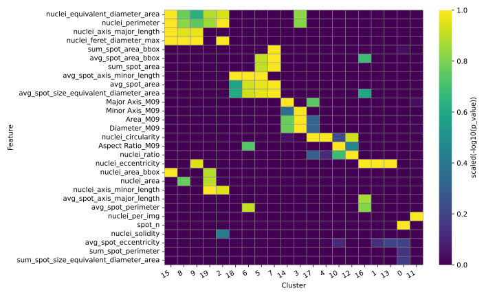

JIMG_ncd analysis results
Analyses using JIMG_ncd included the selection of nuclei with chromatin condensation, the extraction of their morphological features, and the integration of these features with cell-level morphological data obtained directly from Amnis ImageStream.
Subsequently, the most relevant features were selected, dimensionality reduction and clustering with harmonization were performed, and distinguishing features for each cluster were identified.
Finally, the composition of different cell types within each cluster was analyzed across various HD organoid types.
Figure 1. UMAP representation of HD organoid cells showing clusters identified using the DBSCAN algorithm.
Figure 2. UMAP representation of HD organoid cells showing clusters identified using the DBSCAN algorithm, with cluster separation reflecting their set membership.

Figure 3. Dominant features in clusters identified from differential analysis (cluster vs. all), based on scaled statistics from Mann–Whitney U tests with Hochberg correction.

Figure 4. Normalized composition of individual organoids (sets) within each cluster. Cluster 11 was removed due to features suggesting non-biological artifacts.